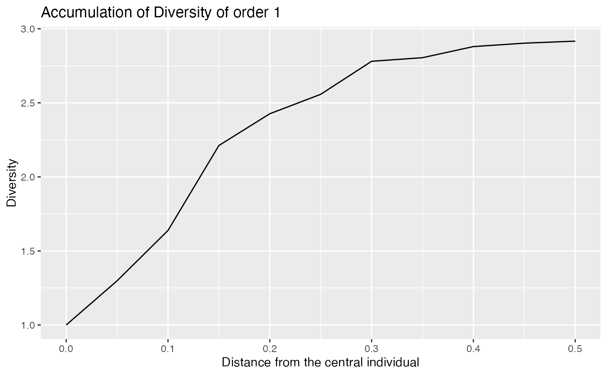

Spatial Diversity and Entropy Accumulation Curves represent the accumulation of entropy and diversity with respect to the distance from individuals
Usage
accum_sp_tsallis(
X,
orders = 0,
neighbors = 1:ceiling(X$n/2),
r = NULL,
correction = c("none", "extrapolation"),
richness_estimator = c("rarefy", "jackknife", "iChao1", "Chao1", "naive"),
individual = FALSE,
show_progress = TRUE,
check_arguments = TRUE
)
accum_sp_hill(
X,
orders = 0,
neighbors = 1:ceiling(X$n/2),
r = NULL,
correction = c("none", "extrapolation"),
richness_estimator = c("rarefy", "jackknife", "iChao1", "Chao1", "naive"),
h0 = c("none", "multinomial", "random location", "binomial"),
alpha = 0.05,
n_simulations = 100,
individual = FALSE,
show_progress = TRUE,
check_arguments = TRUE
)
accum_mixing(
X,
orders = 0,
neighbors = 1:ceiling(X$n/2),
r = NULL,
correction = c("none", "extrapolation"),
richness_estimator = c("rarefy", "jackknife", "iChao1", "Chao1", "naive"),
h0 = c("none", "multinomial", "random location", "binomial"),
alpha = 0.05,
n_simulations = 100,
individual = FALSE,
show_progress = TRUE,
check_arguments = TRUE
)Arguments
- X
a spatialized community (A dbmss::wmppp object with
PointTypevalues as species names.)- orders
A numeric vector: the diversity orders to address. Default is 0.
- neighbors
A vector of integers. Entropy will be accumulated along this number of neighbors around each individual. Default is 10% of the individuals.
- r
A vector of distances. If
NULLaccumulation is alongn, else neighbors are accumulated in circles of radiusr.- correction
The edge-effect correction to apply when estimating the entropy of a neighborhood community that does not fit in the window. Does not apply if neighborhoods are defined by the number of neighbors. Default is "none". "extrapolation" extrapolates the observed diversity up to the number of individuals estimated in the full area of the neighborhood, which is slow.
- richness_estimator
an estimator of richness to evaluate the total number of species, see div_richness. used for interpolation and extrapolation.
- individual
If
TRUE, individual neighborhood entropies are returned.- show_progress
if TRUE, a progress bar is shown during long computations.
- check_arguments
if
TRUE, the function arguments are verified. Should be set toFALSEto save time when the arguments have been checked elsewhere.- h0
The null hypothesis to compare the distribution of
Xto. If "none", the default value, no null hypothesis is tested. "multinomial" means the community will be rarefied down to the number ofneighbors. "random location" means the points will we randomly permuted across their actual locations. "binomial" means the points will we uniformly and independently drawn in the window (a binomial point process is a Poisson point process conditionally to the number of points).- alpha
the risk level, 5% by default.
- n_simulations
the number of simulations used to estimate the confidence envelope.
Value
An accum_sp object, that is also either an accum_sp_diversity, accum_sp_entropy or accum_sp_mixing object.
Details
accum_sp_hill() or accum_sp_tsallis() estimate the diversity or entropy
accumulation curve of a distribution.
Examples
# Generate a random community
X <- rspcommunity(1, size = 50, species_number = 3)
# Calculate the accumulation of richness
accum <- accum_sp_hill(X)
plot(accum, q = 0)
# along distance
accum_r <- accum_sp_hill(X, orders = 1, r = seq(0, .5, .05))
autoplot(accum_r, q = 1)
